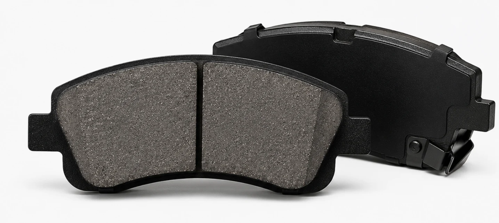
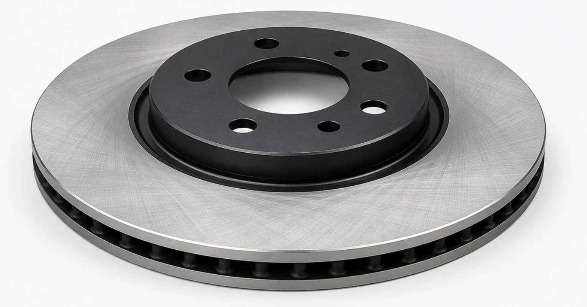

▲ 브레이크 패드 마모는 끼익 소리가 나기 전, 마모 한계선으로 미리 확인하는 것이 안전하다
운전 중 브레이크를 밟을 때마다 "끼이익" 하는 쇳소리가 난다면, 그건 단순한 잡음이 아닙니다. 대부분의 브레이크 패드에는 마찰재 옆면에 얇은 금속 조각(웨어 인디케이터)이 박혀 있는데, 이 조각은 패드가 안전 마진을 다 쓰고 두께 약 2~3mm까지 닳았을 때 비로소 회전하는 디스크에 직접 닿도록 설계돼 있습니다. 금속 탭이 바이올린 활처럼 디스크 표면에 떨리며 고주파 마찰음을 내는 방식입니다. 즉 이 소리가 들린다는 것 자체가 이미 "교체 시기가 지났다"는 뜻이지, "이제 슬슬 준비하라"는 뜻이 아닙니다. 여기서 더 방치하면 금속 프레임이 디스크를 직접 갈아내는 '메탈 투 메탈' 상태로 진행돼 디스크 자체가 손상되고, 수리비는 패드 교체 비용의 몇 배로 뛸 수 있습니다.
1. 왜 하필 "그 소리"가 경고 신호일까

▲ 새 브레이크 패드는 마찰재 두께가 약 10~12mm로, 이 마찰재가 닳으면서 제동력이 유지된다
브레이크 패드는 새것일 때 두께가 약 10~12mm이며, 이 마찰재가 주행 중 디스크와의 마찰로 조금씩 깎여 나갑니다. 두께가 3mm 이하로 얇아지면 정비업계에서는 즉시 교체 대상으로 봅니다. 그래서 대부분의 패드에는 마찰재 옆면이나 안쪽에 금속 탭을 심어두는데, 이 탭은 평소에는 디스크에 닿지 않다가 마찰재가 거의 다 닳아 없어지는 순간 비로소 디스크 표면과 접촉해 고주파 마찰음을 만들어냅니다.
2. 방치하면 벌어지는 일 — 디스크까지 갈아치우는 비용

▲ 패드 마모를 방치하면 이런 디스크까지 갈아내야 하는 상황으로 커질 수 있다
웨어 인디케이터 소음을 무시하고 계속 주행하면 마찰재가 완전히 사라지고 패드의 금속 백플레이트가 디스크 표면에 직접 닿는 '메탈 투 메탈' 상태에 이릅니다. 이렇게 되면 디스크 표면에 깊은 홈이 파이거나 국부적으로 변형이 생겨, 단순 패드 교체로 끝날 일이 디스크(로터)와 캘리퍼까지 함께 교체해야 하는 상황으로 커집니다.
| 상태 | 수리 범위 | 비용(축당) |
|---|---|---|
| 정상 교체 시점 | 패드만 교체 | 10만~40만원 |
| 메탈 투 메탈 방치 | 패드 + 디스크·캘리퍼 교체 | 최대 40만원대 후반 |
승용차 전륜 패드의 평균 교체 주기는 약 3만~5만km, 후륜은 그보다 길게는 2배 가까이 사용하는 경우가 많지만 도심·산악 주행이 잦다면 이보다 훨씬 빨리 마모될 수 있으므로, 정비소 방문 시마다 패드 두께를 함께 점검하는 습관이 결국 비용을 아끼는 길입니다.